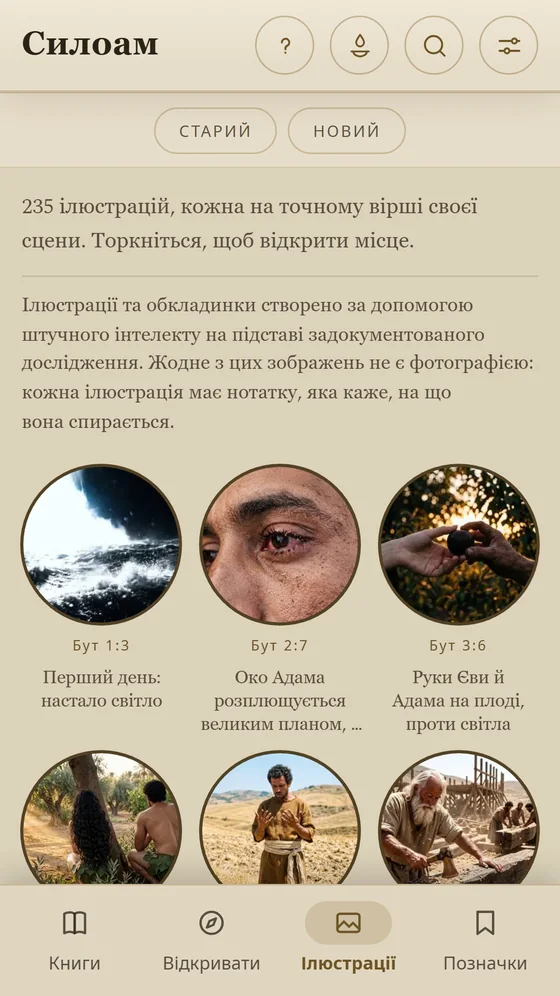

Ілюстрована Свята Біблія
Siloé
Повна Біблія, ілюстрована 235 ілюстраціями — кожна біля вірша своєї сцени, — з вивченням розділ за розділом та івритом і грецькою слово за словом.
Читати безкоштовно · додаткові видання одноразовою покупкою
